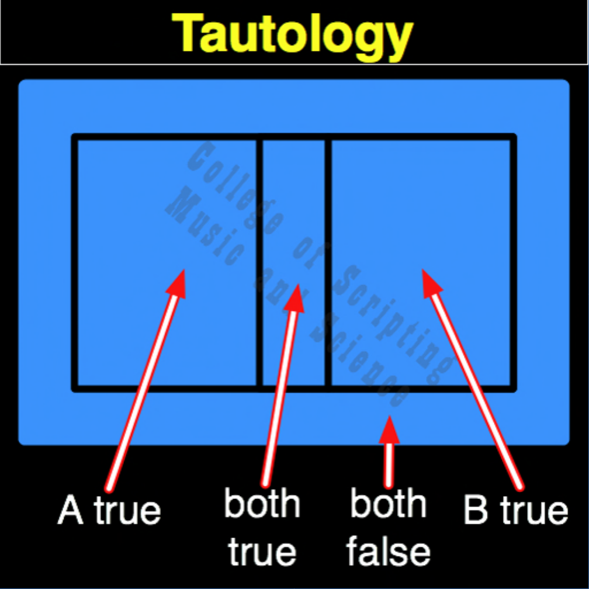

| TAU | |
|---|---|
| 0 + 0 | = 1 |
| 0 + 1 | = 1 |
| 1 + 0 | = 1 |
| 1 + 1 | = 1 |

In the ethical architecture of Starfleet, Tautology acts as the ultimate bedrock (The Federation Charter). It represents the unwavering commitment to peace, diplomacy, and the betterment of all sentient life. Whether an away team encounters total hostility and chaos (0) or peaceful allies (1), a Starfleet officer's core mission remains absolute (1). By actively observing all possibilities before outputting a peaceful resolution, the crew escapes blind reactivity and acts as a conscious force for good in the galaxy.
| Tautology Gate FLIPPED to make Contradiction Gate | |
|---|---|
| 0 + 0 = 1 | FLIPPED becomes 0 |
| 0 + 1 = 1 | FLIPPED becomes 0 |
| 1 + 0 = 1 | FLIPPED becomes 0 |
| 1 + 1 = 1 | FLIPPED becomes 0 |
TAUTOLOGY is the OPPOSITE of CONTRADICTION.
TAUTOLOGY ALWAYS RETURNS TRUE (1).
TAUTOLOGY is its own MIRROR (Perfect Symmetrical Balance).
// gateTautology.js
function gateTautology(a, b)
{
// Starfleet maintains its commitment to peace (1) regardless of environmental hostility
if ((a == 0 && b == 0) ||
(a == 0 && b == 1) ||
(a == 1 && b == 0) ||
(a == 1 && b == 1))
{
// One or Both False or True
return 1;
}
else
{
return 1;
}
}
//----//
/*
TAUTOLOGY
1111
A B
0 0 = 1
0 1 = 1
1 0 = 1
1 1 = 1
Opposite: CONTRADICTION
*/